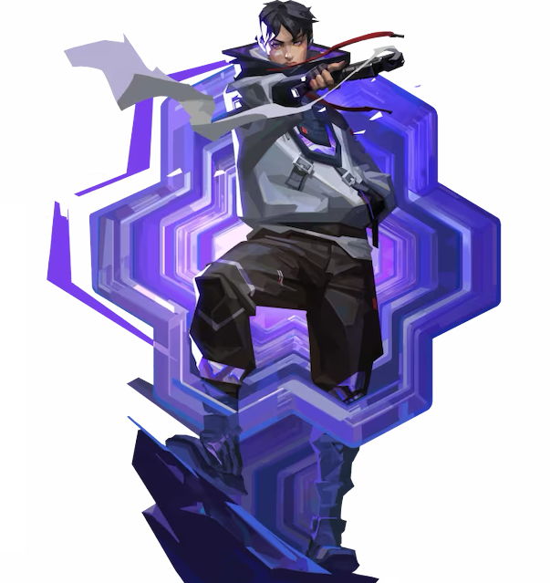

Iso

国籍: 中国
ロール: デュエリスト
Isoは中国出身の雇われフィクサーであるアイソは、フロー状態に入ることで敵の勢力を解体する。彼は周囲のエネルギーを防弾の守りとして再構築しながら、命を懸けた次の決闘へと向かう。
公式トレーラー
スキル
| スキル名 | 値段 | 所持上限 | 説明 |
|---|---|---|---|
| アンダーカット(Q) | 200 | 2個 | 触れたすべてのプレイヤーを短時間の弱体状態にする。壁を含む個体のオブジェクトを通過できる。 |
| ダブルタップ(E) | 無料 | 1個 | スキルを使うと1秒間のモーションが入り、その後自身にシールドを付与できる。このシールドは次に受けるダメージを1回だけ無効化する。敵を切るした後に生成されるオーブを破壊することによって再度シールドを付与できる。 |
| コンティンジェンシー(C) | 100 | 2個 | 壁を前方に発射する。 この壁は銃弾を防ぎ、破壊することはできない。 |
| キルコントラクト(X) | - | 1個 | アイソと敵のどちらかがキルされるまで1対1の状況を作り出す。自分と敵は抑制状態になり、アビリティを使うことはできない。 |
立ち回りとおすすめマップ
敵のヘイトを買うタンク運用
アイソは銃弾を防ぐ盾を出したり、敵をキルすることでシールドを獲得できるので倒されにくい。敵の注意を引き付けて味方から意識を逸らすタンクのような役割をする。
強気に勝負をできる
スキル(ダブルタップ)を使用すると無条件でシールドを付与されるため強気に敵との撃ち合いができる。1発だけダメージを無効化できるため撃ち合いでも有利になり、敵を倒すことでオーブが出現し、再度シールドを付与することができる。
アルティメットの活用
アイソのULTは敵がいない場所に使うと不発になるので、イニシエーターに索敵してもらってから使おう。特にドローン系のアビリティと合わせることで、確実に当てていきたい。